Estratégia
e inovação
para transformar propósito em resultados
Muitos projetos nascem da urgência, do cuidado e do desejo de mudança. Mas, na prática, lidam com a dificuldade de se manter ao longo do tempo, seja pela instabilidade de recursos, pela falta de estrutura institucional ou pelos desafios de articulação nos territórios onde atuam.
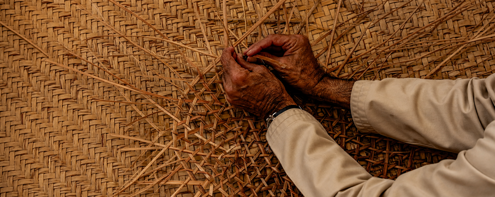
Sobre a Aruma
A Aruma nasce do encontro entre sensibilidade e estratégia, impacto social e inteligência institucional.
Nesse contexto, fortalecemos estruturas, cooperação e atuação institucional, lado a lado com organizações da sociedade civil, gestão pública e investimento social privado. Reconhecemos que cada território tem sua dinâmica e que mudanças consistentes nascem de processos construídos coletivamente.
Por meio de metodologias participativas, a Aruma qualifica a governança, impulsiona a inovação e amplia a capacidade de gestão das iniciativas. Traduzimos diagnósticos em caminhos possíveis, para que cada organização conduza seus processos com autonomia.
O que desenvolvemos
Soluções para fortalecer organizações
Abordagens personalizadas que respondem aos desafios e oportunidades de cada contexto.
Governança
Arquitetura institucional e processos
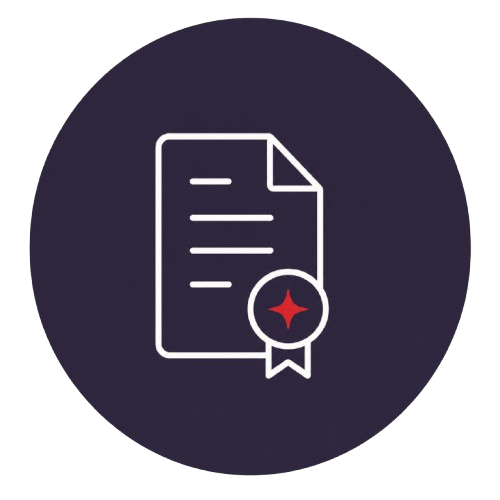
Programas, Projetos e Políticas Públicas
Da concepção à estruturação
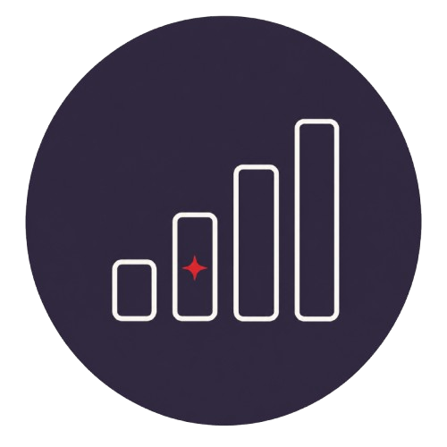
Impacto e Inteligência
Monitoramento, análise e avaliação.
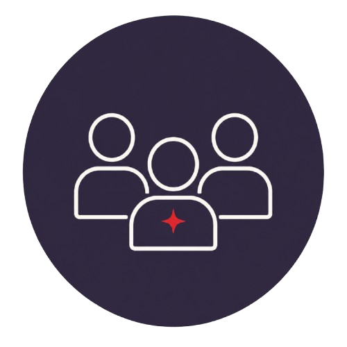
Formação e Facilitação
Desenvolvimento de equipes
e processos coletivos
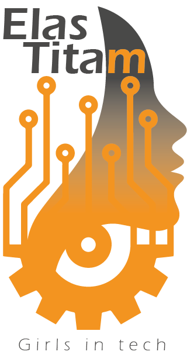
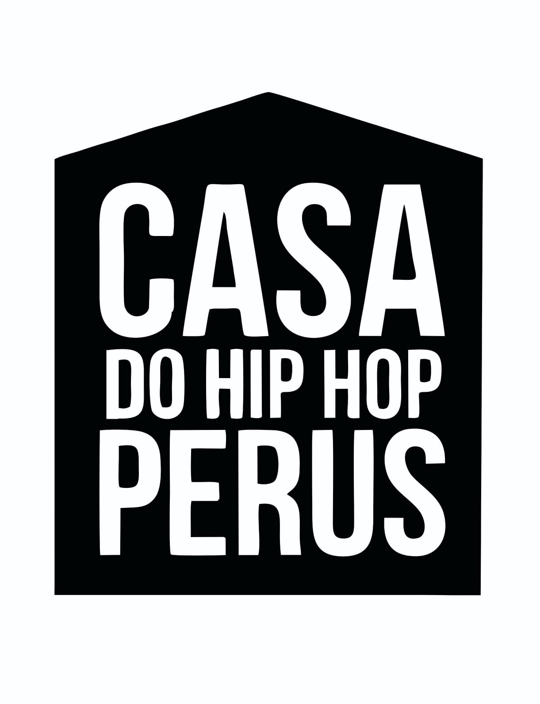
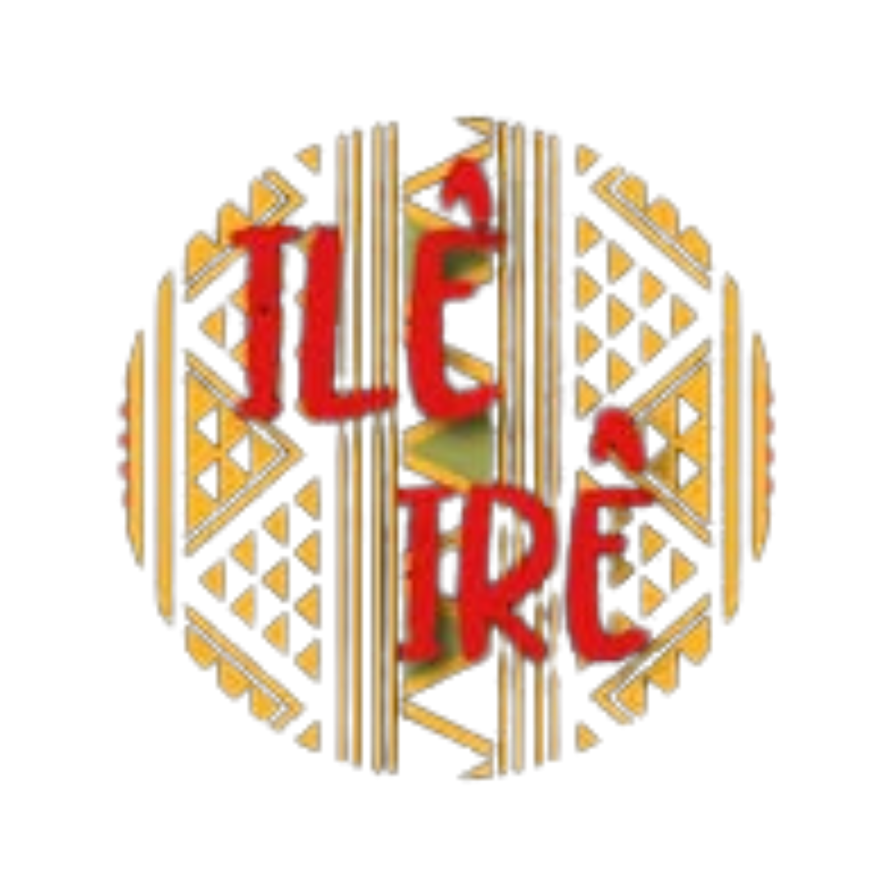
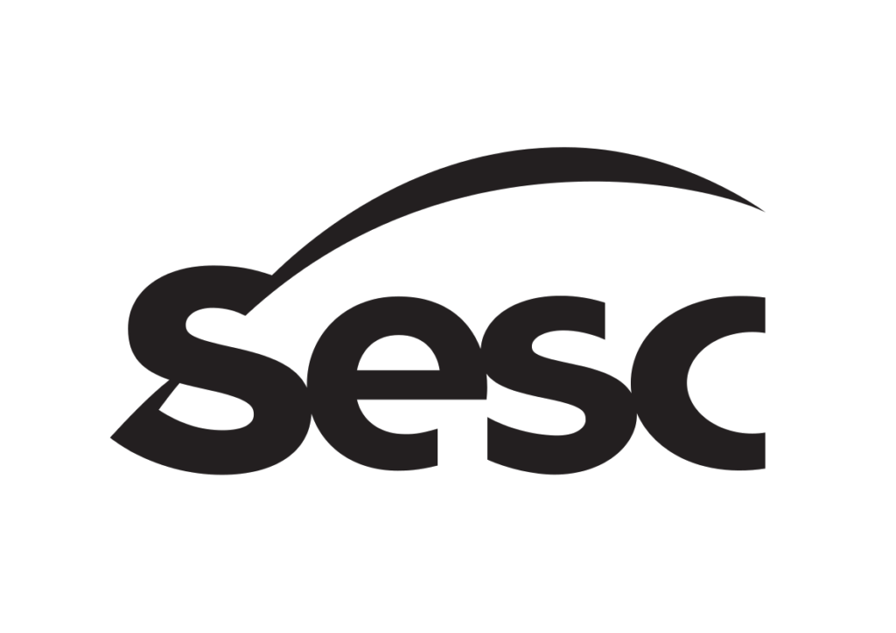
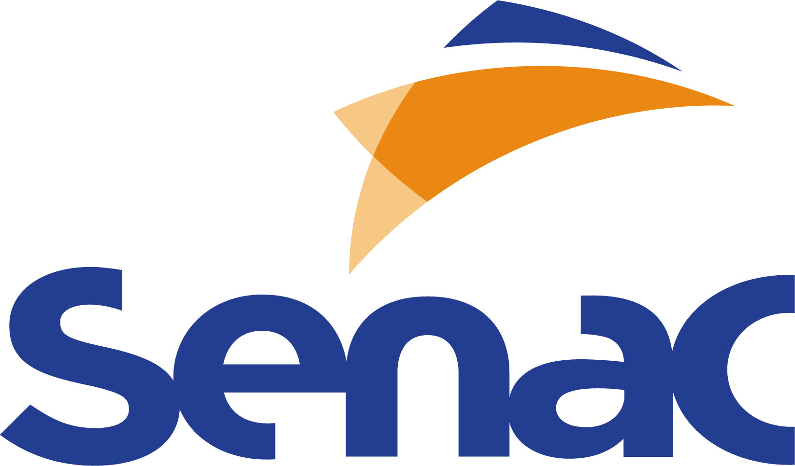
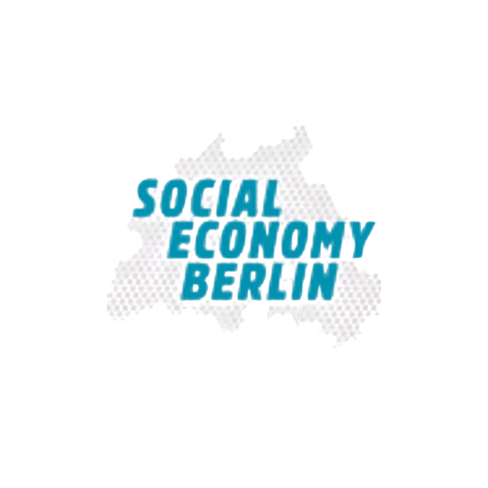
Origem da Aruma
Do tupi-guarani ára (tempo) e umã (antigo) a Aruma se inspira no amanhecer, símbolo de novos ciclos e transformações.
Aruma Social é uma organização global de infraestrutura para impacto social,com bases no Brasil e na Alemanha. Entre contextos, territórios e instituições.
Conheça a Aruma →© 2026 Aruma Social
O QUE FAZEMOS
SIGA A ARUMA
contato@arumasocial.com
A Aruma nasce
do encontro
entre sensibilidade
e estratégia
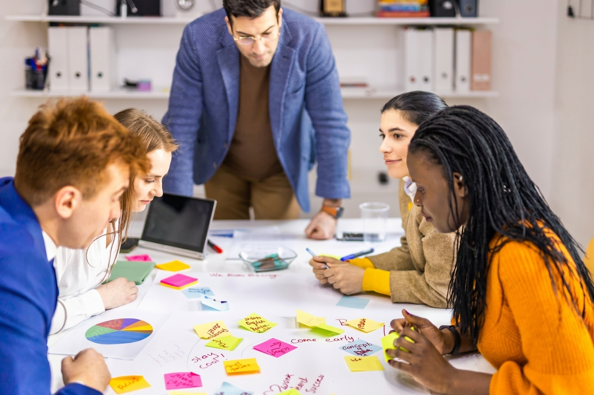
Acreditamos que gerar impacto social duradouro exige mais do que recursos, boas ideias ou compromisso com uma causa. É a combinação entre estratégia, governança e capacidade de implementação que torna as transformações possíveis. Nossa visão é fortalecer organizações da sociedade civil, gestão pública e investimento social privado, ampliando sua capacidade de decisão e atuação.
Nossa trajetória reúne mais de 10 anos de experiência no campo social, em diferentes países e contextos, a partir da observação de um desafio recorrente: iniciativas relevantes nem sempre alcançam seu potencial devido à ausência de estruturas de governança, processos claros e capacidade de execução. Muitas vezes, perdem força não por falta de propósito, mas por limitações institucionais que dificultam sua consolidação e crescimento. É a esse desafio que a Aruma responde.
Assistente social com mais de 10 anos de experiência em projetos sociais e políticas públicas. Planejamento estratégico, gestão de projetos e fortalecimento institucional, com experiência internacional em Berlim.

Fundadora da Aruma Social e mestre em gestão e políticas públicas (FGV-EAESP). Bacharel em Serviço Social (UNIFESP) com mais de doze anos de experiência no terceiro setor, iniciativas privadas e gestão pública. Especialista em Gerenciamento de Projetos - PMI®, atua na estruturação de programas e políticas públicas com foco em desenvolvimento social. Especialista em avaliação de políticas públicas (UFMG) e Building Blocks of Effective M&E Systems (World Bank), também é docente de Tecnologias Sociais e Desenvolvimento Humano no Senac São Paulo. Experiência com liderança de diagnósticos participativos, mobilização comunitária para fortalecimento de iniciativas de impacto social. Fundadora da Casa Arauá — Cuidado em Comunidade que, desde 2016, atua com direitos das mulheres e estratégias públicas e intersetoriais de cuidado em comunidade.

Especialista em transformação organizacional e eficiência de processos, com mais de 15 anos de experiência em consultoria de alta gestão e redesenho institucional.
PARCEIROS E APOIADORES
É com outras pessoas
que o trabalho ganha escala.
Trabalhamos em rede com organizações e pessoas que compartilham dos nossos compromissos e contribuem, de diferentes formas, para tornar esse trabalho possível.
APOIADORES
Pessoas que acreditam, conectam e tornam o trabalho possível.
Sensibilidade para compreender contextos.
Estratégia para transformar possibilidades em ação.
Veja como isso se traduz na prática.
Nossa Atuação© 2026 Aruma Social
O QUE FAZEMOS
SIGA A ARUMA
contato@arumasocial.com
O trabalho
da Aruma
Quatro frentes que abrangem fortalecimento institucional, desenvolvimento de projetos e geração de impacto social.
Elas reúnem competências, metodologias e serviços específicos e podem ser desenvolvidas de forma
independente ou integradas em uma mesma estratégia, conforme as necessidades de cada projeto.
Explore cada uma delas para conhecer como atuamos na prática.
Governança
Fortalecimento institucional, estratégia organizacional e sustentabilidade.
Estruturamos sistemas de governança adaptados à realidade de cada organização, com definição de papéis, organização de fluxos de decisão, estruturação de processos internos e elaboração de relatórios institucionais. Também apoiamos a construção de Teorias da Mudança, alinhando propósito, estratégias e resultados esperados.
Governança não é sobre controle. É sobre permitir que uma iniciativa funcione com clareza, responsabilidade e continuidade.


Programas, Projetos e Políticas Públicas
Estruturação de iniciativas para viabilidade institucional e financeira.
Atuamos na concepção e estruturação de programas, projetos e políticas públicas, apoiando organizações, governos, coletivos e iniciativas independentes na transformação de ideias em propostas viáveis e aptas à captação de recursos.
Inclui o desenvolvimento de projetos para editais, o apoio à formalização de coletivos e organizações, a organização de portfólios institucionais e a construção de estratégias de sustentabilidade financeira.
Ideias precisam de estrutura para ganhar forma, legitimidade e possibilidade de transformação.
Impacto e Inteligência
Monitoramento, análise e avaliação de impacto.
Atuamos com pesquisa, análise territorial e monitoramento de impacto social, desenvolvendo sistemas personalizados de acompanhamento e avaliação.
Estruturamos indicadores qualitativos e quantitativos, dashboards e soluções de análise de dados, incluindo integrações com ferramentas como Power BI, para apoiar a tomada de decisão e o aprimoramento contínuo de programas e projetos.
Nossa abordagem combina escuta qualitativa e análise quantitativa, organizando informações que permitem acompanhar a evolução, os resultados e os efeitos das iniciativas ao longo do tempo.
Medir impacto é transformar dados em ação e aprendizado.


Formação e Facilitação
Desenvolvimento de equipes, territórios e processos participativos
Atuamos na facilitação de oficinas, processos formativos e metodologias participativas, no apoio à implementação e ao encerramento de projetos e políticas em territórios, e no desenvolvimento de materiais de apoio personalizados para diferentes contextos e públicos. Nossa abordagem combina rigor metodológico com sensibilidade às dinâmicas institucionais e territoriais, construindo aprendizados que fortalecem a capacidade organizacional e coletiva.
Aprender na prática fortalece pessoas, equipes e territórios.
Projetos
Da Estratégia ao Impacto
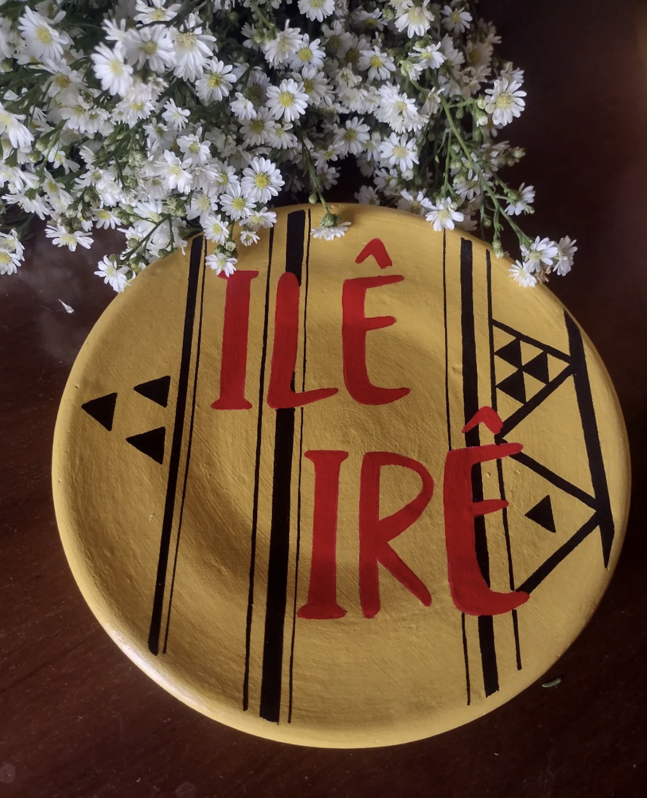
Coletivo Ilê Irê
Fortalecimento Institucional · Planejamento Estratégico · Governança
Coletivo Ilê Irê
Precisavam transformar uma trajetória já construída em uma base institucional capaz de sustentar os próximos passos.
Entramos para construir isso em conjunto. Através de escuta, oficinas participativas e planejamento estratégico, trabalhámos a estrutura, a governança e os principais eixos de atuação do coletivo — traduzindo a sua prática e identidade em uma estrutura institucional própria.
O resultado: um Estatuto Social construído coletivamente, um caminho claro para a formalização e uma base mais sólida para a continuidade e sustentabilidade do projeto.
Senac São Paulo
Projetos Sociais · Políticas Públicas · Governança · Produção de Conhecimento
Senac São Paulo
Responsáveis pelo desenvolvimento do livro Projetos Sociais: concepção, planejamento e governança, leitura obrigatória da pós-graduação em Projetos Sociais e Políticas Públicas do Centro Universitário Senac São Paulo.
Construímos o conteúdo em diálogo com a equipe pedagógica, articulando fundamentos conceituais, ferramentas de planejamento e discussões de governança com casos e linguagem próximos da realidade de quem atua na ponta.
O resultado é uma obra de referência que sustenta a formação de novas gerações de profissionais do campo social.

Casa Arauá
Cuidado em Comunidade · Equidade de Gênero · Territórios · Educação Popular
Casa Arauá
Cuidar ainda é tratado como tarefa privada, invisível, feminizada e desigualmente distribuída. Transformar o cuidado em responsabilidade coletiva e bem público é o ponto de partida desse trabalho.
Em conjunto com a Casa Arauá, desenhamos oficinas e ações de cuidado em comunidade, ofertadas principalmente ao Sesc São Paulo, Organizações Sociais e públicos em situação de vulnerabilidade, alcançando mulheres, crianças e pessoas idosas.
Partimos da ideia de que cuidar se aprende e se compartilha, construindo práticas que redistribuem responsabilidades e fortalecem redes territoriais, em diálogo com a Política Nacional de Cuidados.
O resultado é uma rede de pessoas e organizações mais preparadas para sustentar o cuidado como prática comum.
Elas Titam
Violência contra a Mulher · Segurança Digital · Tecnologia Social · Equidade de Gênero
Elas Titam
Como a tecnologia pode apoiar o enfrentamento da violência contra a mulher?
Fizemos a ponte entre duas organizações especialistas, uma no atendimento a vítimas de violência e outra em tecnologias digitais, e desenhamos juntas o projeto Tecnologias para o Enfrentamento da Violência contra a Mulher.
A proposta qualifica profissionais dos serviços de atendimento em ferramentas e segurança digital, preparando as equipes para lidar com rastreamento de dados, monitoramento e outras formas de invasão que atravessam as situações de violência contra as mulheres na atualidade.
O resultado é uma rede de atendimento mais preparada para proteger mulheres também no ambiente digital.
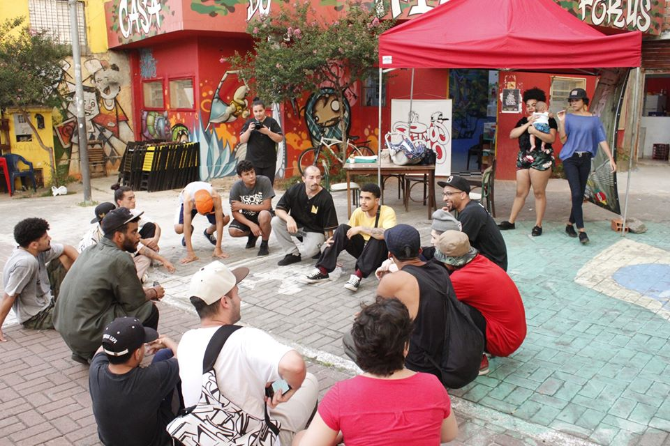
Casa do Hip Hop Perus
Cultura Periférica · Hip Hop · Governança · Captação de Recursos · Territórios
Casa do Hip Hop Perus
Há mais de dez anos, um coletivo transforma vidas através do hip hop em Perus, um dos territórios mais vulneráveis de São Paulo. Porém, em mais de uma década de atuação, havia acessado apenas um financiamento público.
Ao lado do coletivo, trabalhamos na estruturação de projetos com desenho e governança bem definidos, traduzindo em linguagem de edital a potência de um trabalho que já existia.
Por meio de um termo de parceria, seguimos juntos no desenho, monitoramento, avaliação e prestação de contas das iniciativas da Casa.
O resultado foi a conquista do primeiro lugar no edital de cultura periférica da Política Nacional Aldir Blanc do Estado de São Paulo, disputado com iniciativas do estado inteiro.
Cada relação começa por uma conversa.
Fale conosco© 2026 Aruma Social
O QUE FAZEMOS
SIGA A ARUMA
contato@arumasocial.com
Inicie
uma conversa.
Trabalhamos ao lado de organizações para estruturar caminhos possíveis com escuta, cuidado e precisão. Cada relação começa por uma conversa.
© 2026 Aruma Social
O QUE FAZEMOS
SIGA A ARUMA
contato@arumasocial.com